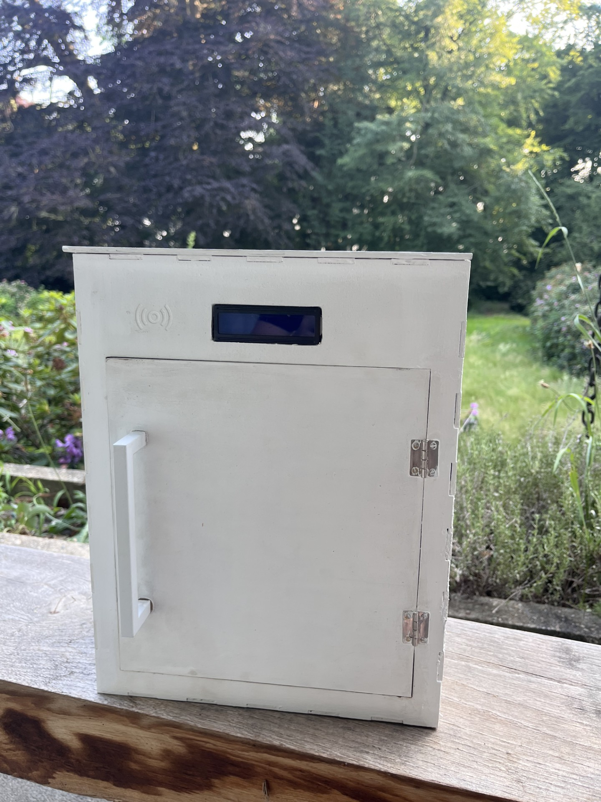

← Back to projects
MailMate
Overview
MailMate is a smart IoT mailbox that detects new mail, monitors moisture levels, and sends real-time notifications through a web application. It also allows users to remotely open the mailbox, making everyday mail management more convenient.
How it works
- A Raspberry Pi handles the sensor input and system logic
- The backend exposes mailbox state through a FastAPI service
- The front end shows status updates and notifications in a simple web interface
- MySQL stores mailbox events and system records for later review
